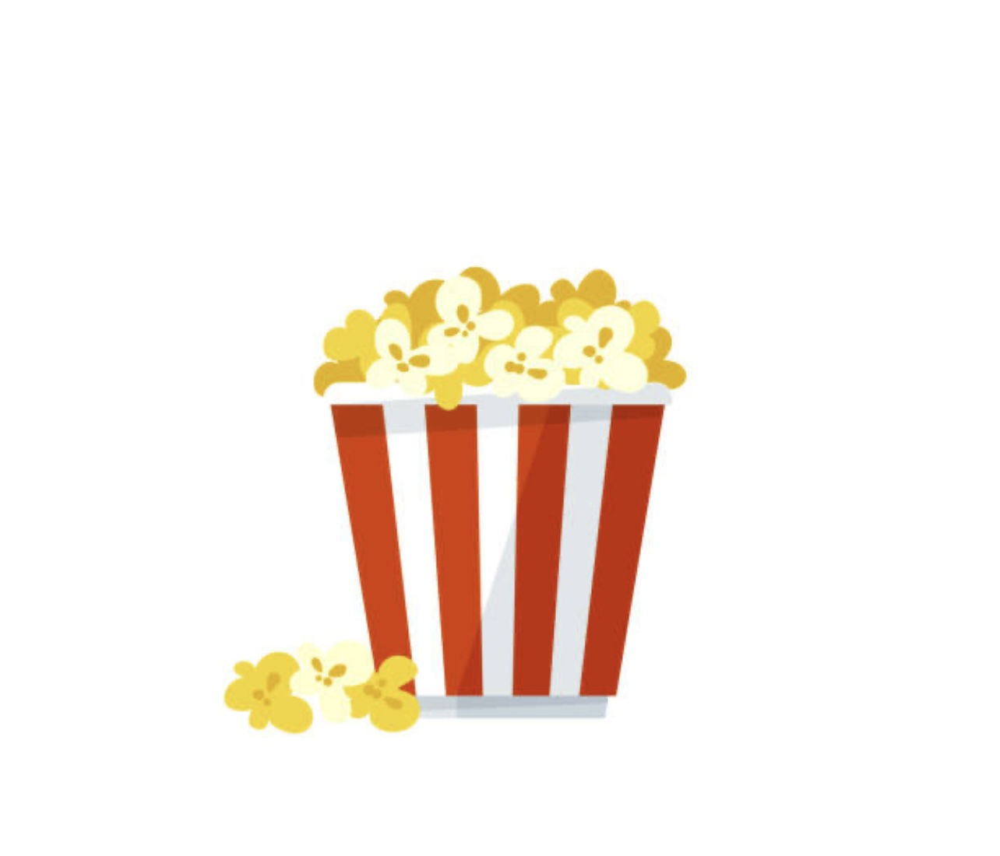

Orane Website
center of interest
Movies and documentary 
In my free time I really like watching films and documentaries on several subjects. But I prefer those about true stories, paranormal stories, serial killer, kidnapping. But also about people who have succeeded in their lives when they started from nothing, I find it interesting to see how people succeed in their lives
Art and books
I also like visiting museums, it allows me to learn about the history, culture, art and way of life of other countries or France. I most often do these visits alone because I find that it makes all these outings more interesting; it allows you to be alone with yourself, which is very important. I also read a lot of books on subjects that are interesting or related to my values. It allows me to learn a lot, and disconnect from my phone


here are some photos that I took during my visits